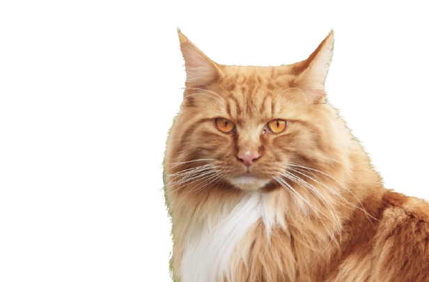

Мейн-Кун - это порода, которая вызывает к себе уважение. Приобретая в свой
дом этого питомца,
вы получите умное животное, которому нет равных
Легко уживается в семьях с детьми
или другими
животными
Внешний вид этой кошки похож на дикую рысь
Вес может достигать
12 кг, а длина 1 м
Выполняет команды как
дрессированная собака
Приобретая животное в нашем питомнике, вы получите
Бесплатное ветеринарное
обслуживание 5 лет
Консультирование по любому
вопросу 24 часа в сутки
Индивидуальный подбор
питания для вашего кота
Мы разработали 8 правил, следуя которым, шерсть вашего
кота
всегда будет блестящей, мягкой и послушной
Нужно ли стричь когти? Это мы и выясним, плюс ко всему
расскажем
как подобрать идеальную когтеточку
Владельцам котов необходимо регулярно осматривать
ушки и
глазасвоих питомцев, ведь это может быть
признаками заболевания
В нашем питомнике существует два подхода: натуральное
питание и
питание промышленными кормами, но выбирать
только вам
Мы ответим на самые популярные ваши вопросы
Есть важная причина, почему котенка стоит забирать домой только
после трех месяцев, — это вакцинация. Первые прививки животному делают в возрасте 8
недель. Ревакцинация проводится через 3–4 недели. То есть котенок, покидающий дом
позднее 12 недель, максимально защищен от различных вирусов и инфекций.
Так что, чтобы в дома появился психически и физически здоровый котенок, игривый,
жизнерадостный, самостоятельный и воспитанный, не спешите забирать его от кошки-мамы
раньше трех месяцев.
Есть важная причина, почему котенка стоит забирать домой только
после трех месяцев, — это вакцинация. Первые прививки животному делают в возрасте 8
недель. Ревакцинация проводится через 3–4 недели. То есть котенок, покидающий дом
позднее 12 недель, максимально защищен от различных вирусов и инфекций.
Так что, чтобы в дома появился психически и физически здоровый котенок, игривый,
жизнерадостный, самостоятельный и воспитанный, не спешите забирать его от кошки-мамы
раньше трех месяцев.
Есть важная причина, почему котенка стоит забирать домой только
после трех месяцев, — это вакцинация. Первые прививки животному делают в возрасте 8
недель. Ревакцинация проводится через 3–4 недели. То есть котенок, покидающий дом
позднее 12 недель, максимально защищен от различных вирусов и инфекций.
Так что, чтобы в дома появился психически и физически здоровый котенок, игривый,
жизнерадостный, самостоятельный и воспитанный, не спешите забирать его от кошки-мамы
раньше трех месяцев.
Есть важная причина, почему котенка стоит забирать домой только
после трех месяцев, — это вакцинация. Первые прививки животному делают в возрасте 8
недель. Ревакцинация проводится через 3–4 недели. То есть котенок, покидающий дом
позднее 12 недель, максимально защищен от различных вирусов и инфекций.
Так что, чтобы в дома появился психически и физически здоровый котенок, игривый,
жизнерадостный, самостоятельный и воспитанный, не спешите забирать его от кошки-мамы
раньше трех месяцев.